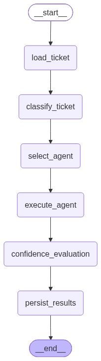

Technical Architecture Document
An enterprise-style multi-agent customer support platform — LangGraph workflow orchestration around CrewAI specialist agents, with a deterministic policy engine gating every risky action.
TODO markers rather than half-building them silently — this document surfaces the ones that matter architecturally rather than hiding behind "mostly done."
Section 1
SupportOps AI orchestrates four specialist AI agents (billing, technical, account, general) behind a FastAPI backend to triage and draft responses to customer support tickets. LangGraph owns the workflow's control flow — state, classification, routing, escalation — while CrewAI supplies the specialist agents it calls into for domain reasoning. A deterministic policy engine, not the model, decides whether a ticket needs human approval before anything reaches a customer.
PostgreSQL is the system of record for all business data. Redis is ephemeral infrastructure only — rate limiting, idempotency, workflow checkpoints, and AI/knowledge-base caching — chosen so a Redis outage can never lose business data (see Section 2's Redis callout).
WorkflowState from the incoming ticket request▼
▼
▼
▼
agent_unresolved signal decide escalation▼
ApprovalRequest row if flaggedFour of these six nodes also save a best-effort Redis checkpoint after running — diagnostics/recovery only, never required for correctness.
The topology above is a real, compiled LangGraph graph, exported via backend.scripts.export_workflow. It has stayed structurally fixed even as every node's implementation moved from placeholder to real — a deliberate separation between the workflow's shape and its node internals.

Section 2
The table below states, for each capability, exactly what it owns and its current implementation status — distinguishing real, Postgres/Redis-backed logic from what remains a documented gap.
IMPLEMENTED in production code PARTIAL implemented in part NOT BUILT not yet built
| Capability | Owns | Status |
|---|---|---|
| JWT / OAuth2 authentication | backend/auth/ — password hashing, token issuance/verification, role dependencies | DONE |
| LangGraph workflow orchestration | backend/graph/ — fixed 6-node graph, state, checkpointing | DONE |
| CrewAI specialist agents | backend/agents/ — billing, technical, account, general, grounded via KB tool | DONE |
| OpenAI ticket classification | backend/graph/classifier.py — structured outputs, Redis-cached | DONE |
| Policy / escalation engine | backend/policy/rules.py — deterministic keyword/threshold rules | DONE |
| Supervisor approval queue | backend/api/supervisor.py — real Postgres-backed view/approve/edit/reject | DONE |
| Idempotent ticket creation | backend/services/idempotency.py — atomic Redis claim, fails closed | DONE |
| Distributed rate limiting | backend/core/rate_limit.py — Redis-backed, in-memory fallback | DONE |
| Audit logging | backend/services/audit.py — real Postgres audit_logs rows | DONE |
| Postgres persistence + migrations | backend/database/ — repository pattern, Alembic migration per table | DONE |
| Confidence scoring | backend/graph/nodes.py — currently _PLACEHOLDER_CONFIDENCE_SCORE, a fixed value, not model-derived | NOT BUILT |
| Per-tenant policy thresholds | backend/policy/rules.py — thresholds are global today, not per-tenant | NOT BUILT |
| Correlation-ID / centralized error middleware | backend/api/middleware/ — package exists, not implemented | NOT BUILT |
| Additional agent tools (billing system, ticketing/CRM lookups) | backend/tools/ — only the knowledge-base tool exists today | PARTIAL |
| Structured (JSON) logging | backend/core/logging.py — plain formatter today; log level not yet sourced from settings | PARTIAL |
Dedicated TicketRepository | backend/database/repositories/ — ticket persistence currently lives in the service layer, not a repository | NOT BUILT |
confidence_evaluation_node currently reads a constant, _PLACEHOLDER_CONFIDENCE_SCORE, rather than a real score derived from the model's own output. Escalation itself is still deterministic and correct — it runs on the policy engine's keyword/threshold rules and the agent's explicit agent_unresolved signal, neither of which depend on this placeholder — but "how confident was the agent" is not yet a real, trustworthy number. Named honestly in the code (the constant's name says what it is) rather than presented as calibrated.
backend/graph/ — workflow control flow, state, checkpointingbackend/agents/ — CrewAI specialist reasoning; no workflow controlbackend/policy/ — escalation/routing rules; the only place that decides human reviewbackend/api/ — HTTP orchestration onlybackend/database/ — SQLAlchemy models + repository-pattern data accessbackend/core/ — framework-level infra: Redis client, rate limiting, security, cachebackend/services/ — application services routes depend on (idempotency, audit, ticket)backend/tools/ — tool implementations exposed to CrewAI agentsSection 3
End-to-end, a single ticket submission moves through the system as follows:
POST /tickets with an Idempotency-Key header; a repeated key replays the original response instead of re-running the workflow.customer_id is validated against Postgres before insert, returning a clean 404 (not a raw foreign-key violation) for an unknown one.load_ticket → classify_ticket → select_agent → execute_agent → confidence_evaluation → persist_results.classify_ticket calls OpenAI for structured-output classification (Redis-cached by ticket text).execute_agent runs the matched CrewAI specialist, grounded by a Postgres knowledge-base lookup tool (also Redis-cached).confidence_evaluation runs the ticket through policy/rules.py's deterministic rules plus the agent's agent_unresolved signal.persist_results writes the outcome to Postgres, and — if the policy flagged it — enqueues a real ApprovalRequest row for a Supervisor/Admin to review.audit_logs row.POST /tickets → LangGraph → classify_ticket → execute_agent (CrewAI) → confidence_evaluation → persist_results → JSON Response
GET /supervisor/queue — list tickets pending approvalGET /supervisor/queue/{ticket_id} — fetch a single queue entryPOST /supervisor/queue/{ticket_id}/approve · /edit · /reject — act on a ticket's draft response, each writing an audit rowSection 4
| Component | Technology | Why |
|---|---|---|
| Backend API | FastAPI | Async-first, typed, built-in OpenAPI docs for the ticket/supervisor contracts |
| Workflow orchestration | LangGraph | Graph-based control flow with first-class state persistence, conditional routing, and human-in-the-loop interrupts |
| Specialist reasoning | CrewAI | Role/task abstraction for domain agents without hand-rolling their reasoning loop |
| System of record | PostgreSQL | Durable storage for tickets, approvals, audit logs — never at risk from a Redis outage |
| Ephemeral infra | Redis | Rate limiting, idempotency, checkpoints, caching — everything safe to lose and rebuild |
| Auth | JWT / OAuth2 | Stateless, standard, works cleanly with FastAPI's Depends system |
LangGraph owns deterministic workflow control — ticket state, classification routing, policy evaluation, human-in-the-loop escalation, persistence. CrewAI implements the Billing, Technical, Account, and General agents that generate domain-specific responses, but never control workflow execution or escalation. The explicit trade-off: two frameworks means more integration surface and cross-component debugging, accepted in exchange for a hard boundary between "AI reasons" and "system decides" that a single framework couldn't enforce as cleanly. Alternatives considered and rejected: LangGraph-only (would mean hand-rolling role-based agents, losing modularity) and CrewAI-only (would make deterministic routing, state persistence, and human approval checkpoints harder to implement consistently). Full write-up: docs/adr/ADR-001-langgraph-vs-crewai.md.
Every feature built on Redis — rate limiting, idempotency, checkpoints, caching — is explicitly ephemeral: a miss recomputes, an outage degrades rather than corrupts. The one deliberate exception is idempotency, which fails closed (a 503 rather than risking a duplicate ticket) because "no duplicate tickets" is a correctness requirement, not a performance concern. This split is what lets the platform honestly claim that a Redis outage never puts business data at risk.
Section 5
The app legitimately runs two long-lived event loops: FastAPI's own request-handling loop, and a dedicated background loop backend.core.asyncio_utils.run_sync uses to bridge LangGraph's synchronous node functions back into async Redis/Postgres calls. Both redis.asyncio.Redis and SQLAlchemy's async engine hold connections bound to whichever loop first uses them. Sharing one client across both loops used to crash with a RuntimeError — for Postgres, it could poison a pooled connection so a later, unrelated request drawing that same connection would 500, which made the bug look intermittent and unrelated to its real trigger. Fixed by handing out one client/engine per calling loop (get_redis_client(), async_session_factory()), with real-Redis/real-Postgres regression tests (tests/integration/test_ticket_workflow.py, test_idempotency_cross_loop.py).
| Feature | On Redis failure | Rationale |
|---|---|---|
| AI classification / KB cache | Fails open — recomputes | A cache miss is just slower, never wrong |
| Workflow checkpoints | Fails open — no checkpoint saved | Diagnostics/recovery only, never required for correctness |
| Rate limiting | Fails open, to a looser fallback ceiling | Availability preferred over precise per-route limits during an outage |
| Idempotency | Fails closed — 503 | Silently proceeding could let a genuine duplicate ticket through |
Section 6
167 tests total: 159 unit tests with Redis mocked via fakeredis and Postgres via test doubles, plus 8 integration tests against a real Redis and/or Postgres that skip themselves — rather than fail — when the service they need isn't reachable, so a plain pytest run is always safe regardless of what's running locally.
pytest → 167 passed
| Area | What's verified |
|---|---|
| Graph nodes | classify_ticket, execute_agent, persist_results, checkpoint save/read behavior |
| Policy engine | Escalation rules, adversarial input handling |
| Supervisor API | Queue listing, approve/edit/reject flows, adversarial cases |
| Services | Idempotency store (atomic claim, fail-closed), audit logging, ticket creation + execution |
| Core infra | Rate limiting (Redis + fallback), caching, asyncio bridge, Redis client lifecycle |
| Auth | JWT issuance/verification, rate-limit key resolution |
| Integration | Real ticket workflow against live Redis/Postgres, cross-loop client isolation, live schema vs. model drift (alembic check) |
Section 7
Named plainly rather than glossed over — these are the gaps that matter architecturally, distinct from the smaller per-module TODO markers scattered through the codebase.
| Gap | Why it matters |
|---|---|
| Confidence score is a fixed placeholder | Escalation itself is still correct (policy rules + agent_unresolved don't depend on it), but there's no real signal for "how sure was the agent" yet |
| Single-tenant policy thresholds | Refund/threshold values are global constants, not per-tenant configuration — a multi-tenant deployment would need this first |
| No correlation-ID / centralized error middleware | Tracing a single request across logs today relies on timestamps and ticket IDs, not a request-scoped correlation ID |
| Only one agent tool exists (knowledge base) | Billing-system and ticketing/CRM lookups are scaffolded but not implemented — agents can answer from documentation, not live account data |
| Logging is plain-text, not structured | No JSON log formatter yet, so log aggregation would need a parser rather than ingesting structured fields directly |
Resources
Want to verify or explore this further? Here you go.